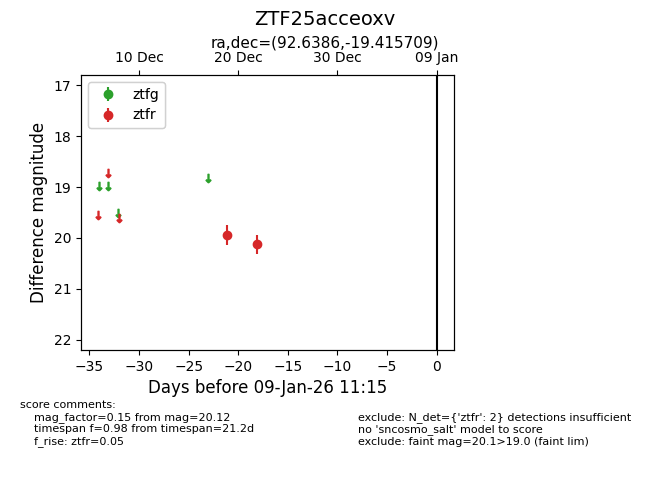
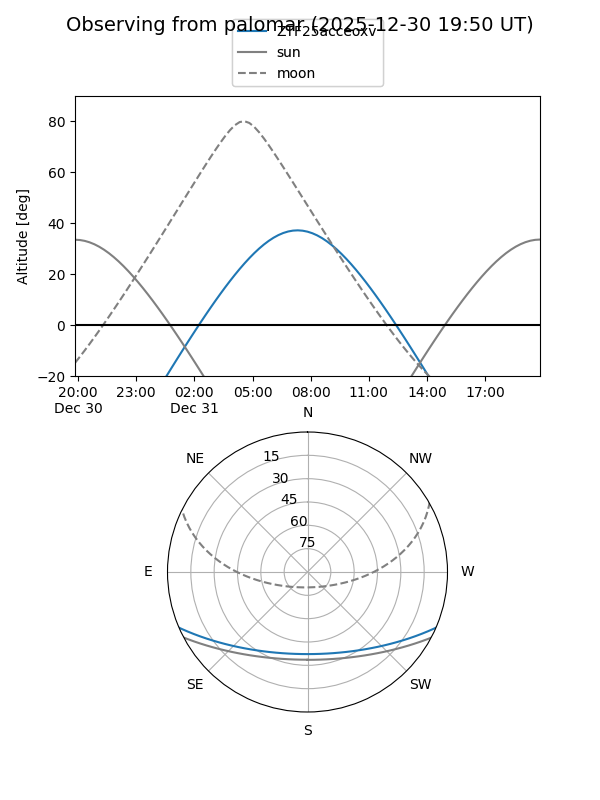
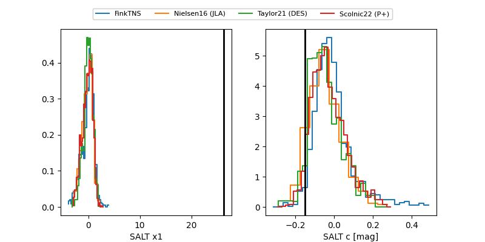

ZTF25acceoxv
Target ZTF25acceoxv at 2025-12-22 17:46
Aliases and brokers:
FINK: fink-portal.org/ZTF25acceoxv
Lasair: lasair-ztf.lsst.ac.uk/objects/ZTF25acceoxv
ALeRCE: alerce.online/object/ZTF25acceoxv
alt names
ZTF25acceoxv (ztf,fink_ztf)
Coordinates:
equatorial (ra, dec) = 92.6386,-19.41571
equatorial (HMS+DMS) = 06:10:33.26,-19:24:56.55
galactic (l, b) = (226.2396,-17.48885)
Flags:
Photometry:
last ztfr=20.12
2 ztfr detections
Lightcurve

Visibility


Additional plots
